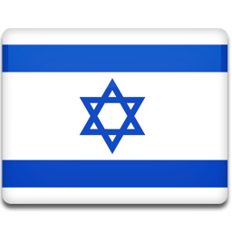
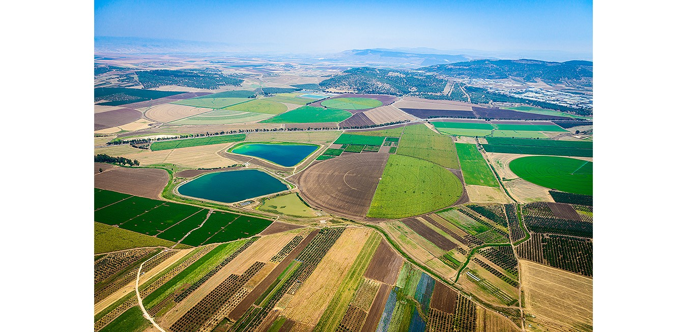

<mat-card class="card">
  <mat-card-header>
    
    <mat-card-title>Israel</mat-card-title>
    <mat-card-subtitle>Holy land</mat-card-subtitle>
  </mat-card-header>
  
  <mat-card-content class="hebrew">
    כֹּל עוֹד בַּלֵּבָב פְּנִימָה<br>
    נֶפֶשׁ יְהוּדִי הוֹמִיָּה<br>
    וּלְפַאֲתֵי מִזְרָח, קָדִימָה<br>
    עַיִן לְצִיּוֹן צוֹפִיָּה
  </mat-card-content>
  <mat-card-actions class="hebrew">
    <button mat-raised-button color="primary">Support</button>
    <button mat-raised-button color="primary">Donate</button>
    <button mat-raised-button color="primary">לעלות</button>
  </mat-card-actions>
<mat-card-footer class="hebrew">תודה</mat-card-footer>
</mat-card>
